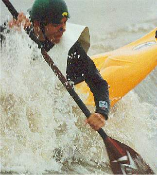
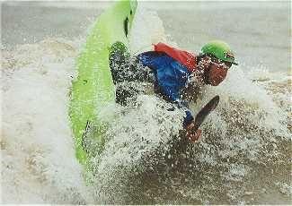
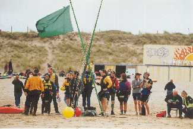

| Tekst: Peter Vos en Ingrid Meulenbelt Foto's: Georges Hoeberechts |
|
Open KBT kampioenschappen in Katwijk zaterdag 6 oktober 2001
|
 |
|
Zaterdag 6 oktober 6:00 uur. Na een lange en intensieve voorbereiding is het zover. Wat zal deze dag brengen? Afgelopen week geen enkele golf op zee maar de voorspellingen zijn redelijk. Op weg naar het strand staat er nog geen zuchtje wind en aangekomen in Katwijk is er een volledige vlakke zee te zien ... |
| Het is inmiddels 7:00 uur. Op de parkeerplaats wordt gekampeerd, maar nog geen enkel teken van leven is zichtbaar. Door vrijwilligers van KBT Katwijk wordt druk overlegd welke weersomstandigheden in de loop van de dag worden verwacht. Daarnaast wordt er reeds rekening gehouden met het eventuele alternatieve programma. Met de kano's waterskiënd achter de boot van de reddingsbrigade surfen. We besluiten de zaak op te bouwen en te zien hoe de dag zich zal gaan ontwikkelen. Geleidelijk aan komen ook de verschillende organisaties het strand op en worden alle tweedehands en testboten uitgestald. Een indrukwekkend aantal boten. Rond 10:00 uur zijn we gereed voor de eerste inschrijvingen van de wedstrijd maar met de huidige branding is het niet mogelijk enige move uit te voeren. Er is wel verbetering zichtbaar. Voorlopig wordt de wedstrijd uitgesteld. Voor de testboten zijn er reeds voldoende mogelijkheden op zee en wordt er wel druk ingeschreven. Later op de dag zal er tevens een bloeiende tweedehands botenhandel ontstaan waarbij diverse boten van eigenaar wisselen. Er zijn 43 mensen die alleen bootjes uittesten. Gezamenlijk vormen zij een bont schouwspel op zee. |
| Om 12:00 uur is er voldoende branding en wordt de wedstrijd alsnog gestart. In de loop van de dag zullen de golven (volgens de verwachting) alleen maar beter worden.
Er hebben zich 8 dames en 22 heren ingeschreven voor de wedstrijd waaronder de Nederlandse rodeotop en de lokale brandingcracks. De wedstrijd verloopt middels het knock-out systeem waarbij 2 heats van 2 deelnemers tegelijkertijd op het water tegen elkaar uitkomen. Verliezers strijden verder in de
basis-poule en de winnaars gaan door voor een plaats in de grote finale. Punten worden door een deskundige jury toegekend gebaseerd op rodeo moves, vaarstijl en variatie. Al snel blijkt dat de golfhoogte inderdaad voldoende is en geen belemmering vormt voor het uitvoeren van de diverse rodeo moves. Na diverse rondes van hevige strijd plaatsen de volgende mensen zich in de finale: René Boom en Remi Wegman bij de heren en Ingrid Meulenbelt en Wendy van Rijn bij de dames. In de heren finale heeft de jury het erg druk met het noteren van punten. Alle voorkomende moves worden aan het publiek voorgeschoteld en zelfs een splitwheel wordt zonder enig probleem uitgevoerd. Na een nek aan nek race wordt René Boom winnaar bij de heren en Wendy van Rijn bij de dames. Nadat de winnaars hun keuze uit het grote assortiment prijzen hebben gemaakt (allen beschikbaar gesteld door sponsors) wordt het restant middels een loterij onder alle deelnemers aan de wedstrijd en testbotendag verloot. De dag wordt afgesloten middels de strand barbecue die nog door een redelijk aantal mensen wordt bezocht. |
 |
| Alles is goed verlopen, het weer en de golven hebben meegezeten. Op weg naar huis begint het te regenen zelfs de weergoden zijn ons goed gestemd geweest. Volgend jaar zal zo mogelijk het evenement worden gehouden in Ter Heijde bij vereniging de Vier Winden. We hopen dan op eenzelfde opkomst en flinke golven. (Actie) foto's van het evenement, gemaakt door onze professionele fotograaf (Georges Hoeberechts) zijn ook te bezichtigen op de KBT site: http://www.kbt-katwijk.nl. |
|
We willen de sponsors bedanken voor het ter beschikking stellen van de prijzen: |
 |
|
Klik hier voor uitslag BRW-2001 |